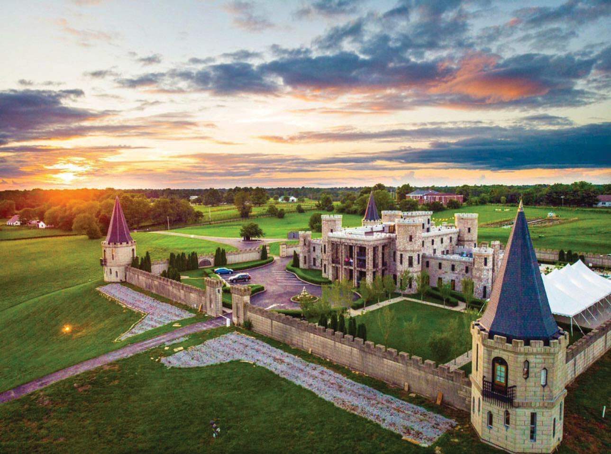

October 03, 2026
Kentucky Castle CEO Ousted After Lawsuit Claims Hidden Cameras Secretly Filmed Guests


Photo: Kentucky Distillers' Association; aerial: The Kentucky Castle
Kentucky Castle CEO Ousted After Lawsuit Claims Hidden Cameras Secretly Filmed Guests
The fairy-tale castle in Versailles, Kentucky just got a very un-fairy-tale headline: its CEO has been thrown out of his own kingdom.
The parent company of The Kentucky Castle and True Story Whiskey terminated Chief Executive Officer Wes Henderson on Friday, Oct. 3, after details from a sealed lawsuit became public the day before. Henderson — a co-founder of Angel's Envy bourbon, which was later sold to Bacardi, and a Kentucky Bourbon Hall of Fame inductee — has owned the Kentucky Castle since 2023.
What the lawsuit alleges
The suit, filed in June in Oldham County and obtained by the Lexington Herald-Leader, accuses Henderson of secretly filming guests at The Kentucky Castle and others in "various stages of undress" and participating in sexual acts, according to the paper's reporting.
The allegations are based on footage found on the SD cards of numerous hidden cameras, the suit claims. A total of 40 people were identified as having been recorded without their knowledge, and some of the footage allegedly included Henderson deliberately placing the cameras to capture views of a bed.
A lawyer who has represented Henderson in the past did not immediately reply to a request for comment.
Fallout
In a statement from the board and leadership of parent company TKC Distilling, higher-ups said the termination of Henderson's employment is "effective immediately" following the allegations in the lawsuit. Kyle Henderson, the oldest of Wes Henderson's six sons, will assume the CEO role while the board conducts what it called a "full and independent investigation into the allegations."
The fallout spread fast:
- Henderson stepped down from his role as a deputy coroner in Oldham County and took an unpaid leave of absence, Oldham County Coroner David Pendleton said on Oct. 3 — "before I could issue a notice of suspension," he added.
- Henderson is also facing multiple unrelated lawsuits for debts, totaling over $1.5 million, owed by his businesses.
Developing
This is a developing story — the Courier-Journal's report notes it may be updated as more comes out. We'll keep the desk lit and update this page as facts land.
Source: The Courier-Journal (reporting via the Lexington Herald-Leader). Photos: Kentucky Distillers' Association; aerial: The Kentucky Castle.
Source: The Courier-Journal — read the original report
← Back to latest stories